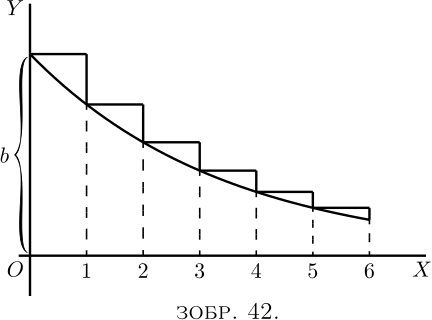

Якби ми взяли як $p$ правильний дріб (менше одиниці), крива, очевидно, мала б тенденцію спускатися вниз, як на Зображенні 42, де кожна наступна ордината становить $\frac{3}{4}$ висоти попередньої.

Рівняння все ще \[ y=bp^x, \] але оскільки $p$ менше одиниці, $\log_\epsilon p$ буде від’ємною величиною, і її можна записати як $-a$; так що $p=\epsilon^{-a}$, і тепер наше рівняння для кривої набуває вигляду \[ y=b\epsilon^{-ax}. \]
Важливість цього виразу полягає в тому, що у випадку, коли незалежною змінною є час, рівняння представляє перебіг великої кількості фізичних процесів, у яких щось поступово спадає. Так, охолодження гарячого тіла представлено (у знаменитому «законі охолодження» Ньютона) рівнянням \[ \theta_t=\theta_0 \epsilon^{-at}; \] де $\theta_0$ — початкове перевищення температури гарячого тіла над температурою його оточення, $\theta_t$ — перевищення температури в кінці часу $t$, а $a$ — константа, а саме: константа декременту, що залежить від площі поверхні, відкритої тілом, і від його коефіцієнтів провідності та випромінювальної здатності тощо.
Подібна формула \[ Q_t=Q_0 \epsilon^{-at}, \] використовується для вираження заряду наелектризованого тіла, яке спочатку має заряд $Q_0$, який витікає з константою декременту $a$, яка у цьому випадку залежить від місткості тіла та від опору шляху витоку.
Коливання, надані гнучкій пружині, через деякий час згасають, і згасання амплітуди руху можна виразити подібним чином.
Фактично $\epsilon^{-at}$ служить фактором згасання для всіх тих явищ, у яких швидкість зменшення пропорційна величині того, що зменшується; тобто де, у наших звичних символах, $\dfrac{dy}{dt}$ пропорційна у кожен момент значенню, яке в цей момент має $y$. Бо нам залишається тільки оглянути криву, Зображення 42 вище, щоб побачити, що в кожній її частині нахил $\dfrac{dy}{dx}$ пропорційний висоті $y$; крива стає більш плоскою, коли $y$ стає меншим. У символах, таким чином, $y=b\epsilon^{-ax}$ або \[ \log_\epsilon y = \log_\epsilon b - ax \log_\epsilon \epsilon = \log_\epsilon b - ax,\\ \text{і, диференціюючи,}\; \frac{1}{y}\, \frac{dy}{dx} = -a;\\ \text{отже}\; \frac{dy}{dx} = b\epsilon^{-ax} × (-a) = -ay; \] або, словами, нахил кривої вниз і пропорційний $y$ і константі $a$.
Ми мали б отримати той самий результат, якби взяли рівняння у формі \begin{align*} y &= bp^x; \\ \text{тоді}\; \frac{dy}{dx} &= bp^x × \log_\epsilon p. \\ \text{Але}\; \log_\epsilon p &= -a; \\ \text{дає нам}\; \frac{dy}{dx} &= y × (-a) = -ay, \end{align*} як і раніше.
Стала часу. У виразі для «коефіцієнта згасання» $\epsilon^{-at}$ величина $a$ є зворотною іншої величини, відомої як “стала часу”, яку ми можемо позначити символом $T$. Тоді коефіцієнт згасання буде записаний $\epsilon^{-\frac{t}{T}}$, і можна побачити, зробивши $t = T$, що значення $T$ $\left(\text{або} \dfrac{1}{a}\right)$ це тривалість часу, який необхідний, щоб початкова кількість (у попередніх випадках називається $\theta_0$ або $Q_0$) зменшилася до $\dfrac{1}{\epsilon}$-ї частини, тобто до $0.3678$ від початкового значення.
Значення $\epsilon^x$ і $\epsilon^{-x}$ постійно потрібні в різних галузях фізики, і оскільки вони наведені в дуже небагатьох наборах математичних таблиць, деякі значення приведено тут для зручності. .
| $x$ | $\epsilon^x$ | $\epsilon^{-x}$ | $1-\epsilon^{-x}$ |
|---|---|---|---|
| $0$ | $1.0000$ | $1.0000$ | $0.0000$ |
| $0.10$ | $1.1052$ | $0.9048$ | $0.0952$ |
| $0.20$ | $1.2214$ | $0.8187$ | $0.1813$ |
| $0.50$ | $1.6487$ | $0.6065$ | $0.3935$ |
| $0.75$ | $2.1170$ | $0.4724$ | $0.5276$ |
| $0.90$ | $2.4596$ | $0.4066$ | $0.5934$ |
| $1.00$ | $2.7183$ | $0.3679$ | $0.6321$ |
| $1.10$ | $3.0042$ | $0.3329$ | $0.6671$ |
| $1.20$ | $3.3201$ | $0.3012$ | $0.6988$ |
| $1.25$ | $3.4903$ | $0.2865$ | $0.7135$ |
| $1.50$ | $4.4817$ | $0.2231$ | $0.7769$ |
| $1.75$ | $5.755$ | $0.1738$ | $0.8262$ |
| $2.00$ | $7.389$ | $0.1353$ | $0.8647$ |
| $2.50$ | $12.182$ | $0.0821$ | $0.9179$ |
| $3.00$ | $20.086$ | $0.0498$ | $0.9502$ |
| $3.50$ | $33.115$ | $0.0302$ | $0.9698$ |
| $4.00$ | $54.598$ | $0.0183$ | $0.9817$ |
| $4.50$ | $90.017$ | $0.0111$ | $0.9889$ |
| $5.00$ | $148.41$ | $0.0067$ | $0.9933$ |
| $5.50$ | $244.69$ | $0.0041$ | $0.9959$ |
| $6.00$ | $403.43$ | $0.00248$ | $0.99752$ |
| $7.50$ | $1808.04$ | $0.00055$ | $0.99947$ |
| $10.00$ | $22026.5$ | $0.000045$ | $0.999955$ |
Як приклад використання цієї таблиці, припустимо, що гаряче тіло охолоджується, і що на початку експерименту (тобто коли $t = 0$) воно на $72°$ гарячіше за навколишні об’єкти. Якщо стала часу її охолодження становить $20$ хвилин (тобто якщо потрібно $20$ хвилин, щоб її надлишок температури впав до $\dfrac{1}{\epsilon}$ частини від $72°$), тоді ми можемо обчислити, до якої величини температура тіла впаде за будь-який момент часу $t$. Наприклад, нехай $t$ становить $60$ хвилин. Тоді $\dfrac{t}{T} = 60 ÷ 20 = 3$, тож нам потрібно знайти значення $\epsilon^{-3}$, а потім помножити вихідні $72°$ на це. З таблиці видно, що $\epsilon^{-3}$ дорівнює $0.0498$. Таким чином, наприкінці $60$ хвилин перевищення температури впаде до $72° × 0.0498 = 3.586°$.
Більше прикладів.
(1) Сила електричного струму в провіднику у момент $t$ секунд після застосування електрорушійної сили, що створює цей струм, визначається виразом $C = \dfrac{E}{R}\left\{1 - \epsilon^{-\frac{Rt}{L}}\right\}$ .
Стала часу це $\dfrac{L}{R}$.
Якщо $E = 10$, $R =1$, $L = 0.01$, тоді, коли $t$ дуже великий, член $\left\{1 - \epsilon^{-\frac{Rt}{L}}\right\}$ стає $1$, і $C = \dfrac{E}{R} = 10$; а також \[ \frac{L}{R} = T = 0.01. \]
Тоді силу електричного струму в будь-який час можна записати так: \[ C = 10 - 10\epsilon^{-\frac{t}{0.01}}, \] Стала часу дорівнює $0.01$. Це означає, що потрібно $0.01$ секунди, щоб змінний член зменшився до $\dfrac{1}{\epsilon} = 0.3678$ частки від його початкового значення $10\epsilon^{-\frac{0}{0.01}} = 10$.
Щоб знайти значення струму, скажімо, при $t = 0.001 \text{ секунди}$, $\dfrac{t}{T} = 0.1$, $\epsilon^{-0.1} = 0.9048$ (з таблиці).
Звідси випливає, що після $0.001$ сек. змінний член становитиме $0.9048 × 10 = 9.048$, а фактичний струм буде $10 - 9.048 = 0.952$.
Подібним чином наприкінці $0.1$ секунди \[ \frac{t}{T} = 10;\quad \epsilon^{-10} = 0.000045; \] змінний член дорівнює $10 × 0.000045 = 0.00045$, а струм $9.9995$.
(2) Інтенсивність $I$ променя світла, який пройшов через товщину $l$ см деякого прозорого середовища $I = I_0\epsilon^{-Kl}$, де $I_0$ — початкова інтенсивність променя, а $K$ — «константа поглинання».
Цю константу зазвичай знаходять експериментально. Якщо виявити, наприклад, що інтенсивність променя світла зменшилася на 18% при проходженні через $10$ см певного прозорого середовища, це означає, що $82 = 100 × \epsilon^{-K×10}$ або $\epsilon^{-10K} = 0.82$, а з таблиці видно, що $10K = 0.20$ приблизно; отже $K = 0.02$.
Щоб знайти товщину, яка зменшить інтенсивність до половини її значення, потрібно знайти значення $l$, яке задовольняє рівність $50 = 100 × \epsilon^{-0.02l}$, або $0.5 = \epsilon^{-0.02 l}$. Вона знаходиться шляхом представлення цього рівняння в його логарифмічній формі, а саме: \[ \log 0.5 = -0.02 × l × \log \epsilon, \] що дає приблизно \[ l = \frac{-0.3010}{-0.02 × 0.4343} = 34.7 \text{ сантиметрів}. \]
(3) Відомо, що кількість $Q$ радіоактивної речовини, яка ще не зазнала перетворення, пов’язана з початковою кількістю $Q_0$ речовини співвідношенням $Q = Q_0 \epsilon^{-\lambda t }$, де $\lambda$ — константа, а $t$ — час у секундах, що минув із початку перетворення.
Для «радію $A$», якщо час виражено в секундах, експеримент показує, що $\lambda = 3.85 × 10^{-3}$. Знайти час, необхідний для перетворення половини речовини. (Цей час називається «періодом напіврозпаду» речовини.)
Маємо $0.5 = \epsilon^{-0.00385t}$. \begin{align*} \log 0.5 &= -0.00385t × \log \epsilon; \\ \text{і}\; t &= 3\text{ хвилини (майже)}. \end{align*}
(2) Якщо гаряче тіло охолоджується так, що за $24$ хвилини його надлишок температури впав до половини початкової величини, виведіть сталу часу та знайдіть, скільки часу воно охолоджуватиметься до $1$ відсотка початкового надлишку.
(3) Побудуйте криву $y = 100(1-\epsilon^{-2t})$.
(4) Наступні рівняння дають дуже схожі криві: \begin{align*} \text{(i)}\ y &= \frac{ax}{x + b}; \\ \text{(ii)}\ y &= a(1 - \epsilon^{-\frac{x}{b}}); \\ \text{(iii)}\ y &= \frac{a}{90°} \arctan \left(\frac{x}{b}\right). \end{align*}
Намалюйте всі три криві, взявши $a= 100$ міліметрів, $b = 30$ міліметрів.
(5) Знайдіть похідну $y$ відносно $x$, якщо \[ (a) y = x^x;\quad (b) y = (\epsilon^x)^x;\quad (c) y = \epsilon^{x^x}. \]
(6) Для «торію $A$» значення $\lambda$ становить $5$; знайти «період напіврозпаду», тобто час, необхідний для перетворення половини $Q$ початкової кількості $Q_0$ «торію $A$» у виразі \[ Q = Q_0 \epsilon^{ -\lambda t}; \] $t$ у секундах.
(7) Конденсатор місткістю $K = 4 × 10^{-6}$, заряджений до потенціалу $V_0 = 20$, розряджається через опір $10 000$ Ом. Знайдіть потенціал $V$ після (a) $0.1$ секунди; (b) $0.01$ секунди; припускаючи, що падіння потенціалу відповідає правилу $V = V_0 \epsilon^{-\frac{t}{KR}}$.
(8) Заряд $Q$ наелектризованої ізольованої металевої сфери зменшується з $20$ до $16$ одиниць за $10$ хвилин. Знайти коефіцієнт $\mu$ витоку, якщо $Q = Q_0 × \epsilon^{-\mu t}$, де $Q_0$ — початковий заряд, а $t$ — секунди. Знайдіть час, за який половина заряду витікає.
(9) Затухання на телефонній лінії можна визначити за співвідношенням $i = i_0 \epsilon^{-\beta l}$, де $i$ — це сила телефонного струму (з початковим значенням $i_0$) через $t$ секунд; $l$ — довжина лінії в кілометрах, $\beta$ — константа. Для франко-англійського підводного кабелю, прокладеного в 1910 році, $\beta = 0.0114 $. Знайдіть затухання на кінці кабелю ($40$ кілометрів) і довжину, на якій $i$ все ще становить $8$% початкового струму (граничне значення дуже хорошого прослуховування).
(10) Тиск $p$ атмосфери на висоті $h$ кілометрів визначається як $p=p_0 \epsilon^{-kh}$; $p_0$ — це тиск на рівні моря ($760$ міліметрів).
Тиск на $10$, $20$ і $50$ кілометрах становить $199.2$, $42.2$, $0.32$ відповідно. Знайдіть $k$ у кожному випадку. Використовуючи середнє значення $k$, знайдіть відсоток похибки в кожному випадку.
(11) Знайдіть мінімум або максимум $y = x^x$.
(12) Знайдіть мінімум або максимум $y = x^{\frac{1}{x}}$.
(13) Знайдіть мінімум або максимум $y = xa^{\frac{1}{x}}$.
(1) Нехай $\dfrac{t}{T} = x$ ($\text{отже } t = 8x$), і скористайтеся таблицею вище.
(2) $T = 34.627 $; $159.46$ хвилин.
(3) Візьмемо $2t = x$ і скористаємось таблицею вище.
(5) (a) $x^x \left(1 + \log_\epsilon x\right)$; (b) $2x(\epsilon^x)^x$; (c) $\epsilon^{x^x} × x^x \left(1 + \log_\epsilon x\right)$.
(6) $0.14$ секунди.
(7) (a) $1.642$; (b) $15.58$.
(8) $\mu = 0.00037$, $31^m \frac{1}{4}$.
(9) $i$ становить $63.4$% від $i_0$, $220$ кілометрів.
(10) $0.133$, $0.145$, $0.155$, середнє значення $0.144$; $-10.2$%, $-0.9$%, $+77.2$%.
(11) Мін. для $x = \dfrac{1}{\epsilon}$.
(12) Макс. для $x = \epsilon$.
(13) Мін. для $x = \log_\epsilon a$.